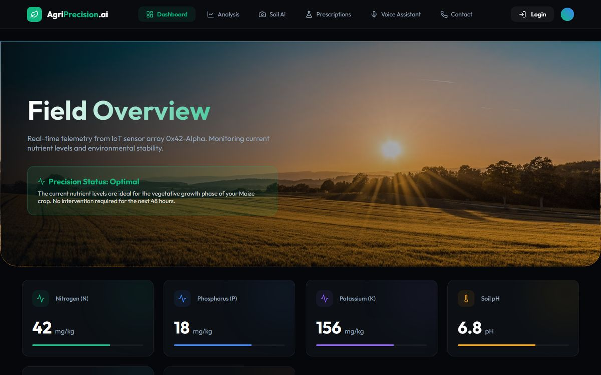
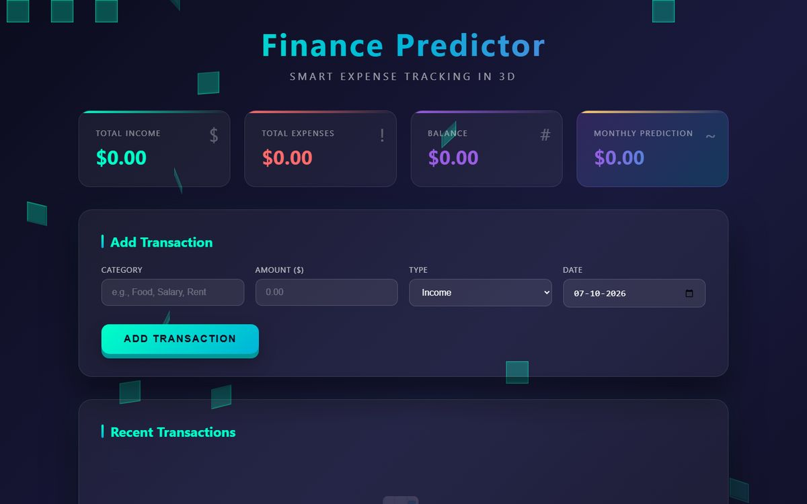
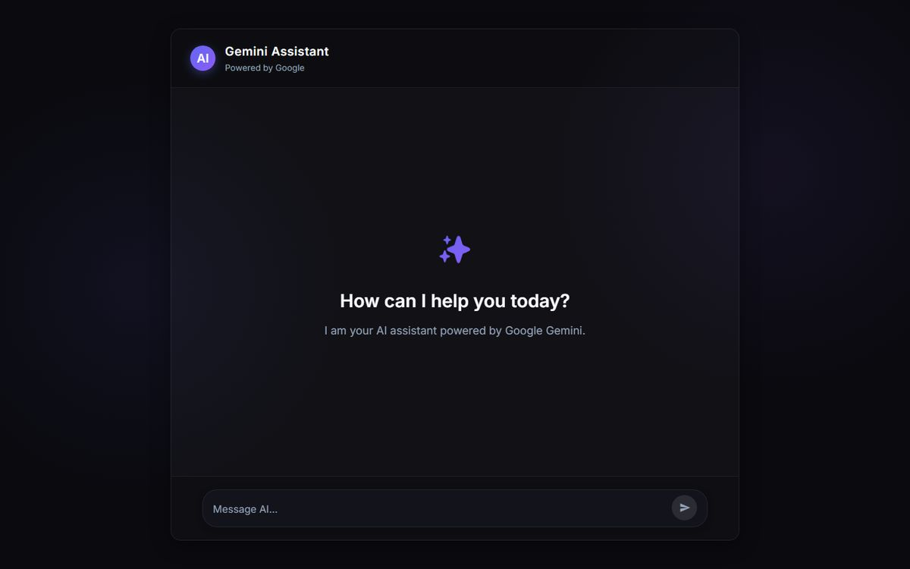
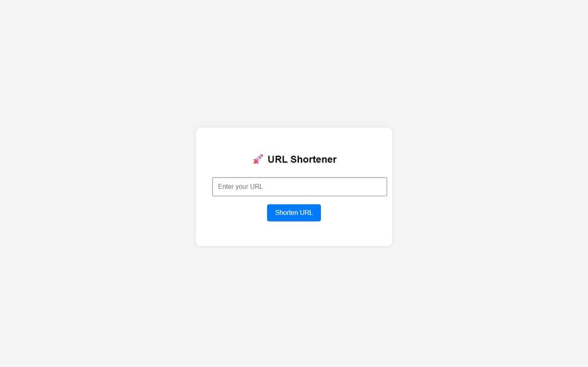
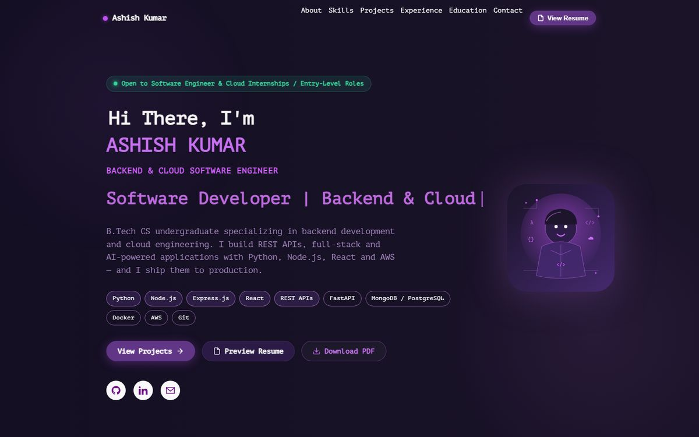

Full-Stack Applications
Complete products, from interface to database. Auth, APIs, data models and clean UI, built as one system.
I build software that moves from idea to production.

// 02 — COMMIT
I'm Ashish Kumar, a Computer Science Engineering graduate from Lovely Professional University.
I started with programming and CS fundamentals, then got pulled toward a bigger question: how does a complete application actually work? Not just the screen, but the API behind it, the database under it, the server it runs on, and the pipeline that ships it.
So I stopped only studying and started building: full-stack cloud apps, AI tools, a bug tracker on AWS, a CI-driven test framework, a finance predictor, an agriculture AI. Each project taught me another layer of the stack.
Now I want to do this on real production systems, with a team that moves fast, where I can contribute from day one, learn from experienced engineers and take on more ownership over time.
// MISSION
Software engineering × Cloud × AI × Automation — built to be useful, built to be reliable.
// 03 — BUILD
Four disciplines, one system. I work across the whole stack, so the parts fit together.
Keep scrolling →Complete products, from interface to database. Auth, APIs, data models and clean UI, built as one system.
Applications that reason over data: configurable AI agents, workflow builders and screening systems that measure their own accuracy.
Code that's actually live. Apps hosted on AWS EC2 and Vercel, with CI pipelines that keep them working.
Test frameworks that catch bugs before users do: Selenium, TestNG and Page Object Model, wired into Jenkins.
// from code to cloud
I don't just write code.
I build and deploy systems.
// 04 — DEPLOY
Three projects, three layers of engineering: product, backend and quality.
Create, configure and run AI agents and multi-step workflows from one dashboard.
Shows modern full-stack work end to end: authentication, GraphQL APIs, relational data, cloud deployment and AI orchestration.
A full bug lifecycle in one place, from report to triage to resolution.
Shows backend architecture, authentication, CRUD, data modeling and cloud hosting on AWS.
End-to-end tests that run themselves on every build.
Shows quality engineering, CI/CD integration and maintainable test architecture with the Page Object Model.
// 05 — MORE BUILDS
Every one of these is deployed. Hover to preview the live front page, click to open it.





// 06 — SCALE
JavaScript · TypeScript · Python · Java · SQL
React · Next.js · HTML · CSS
Node.js · Flask · GraphQL · Hasura · REST
PostgreSQL · SQLite
AWS EC2 · Vercel · Nhost · Jenkins · Maven · Git · CI/CD
Selenium WebDriver · TestNG · Page Object Model
// 07 — RESULTS
Resume ↔ job-description matching accuracy. An AI-powered resume screening tool I built at the Hack2Skill Competitive Event 2025.
Public GitHub repositories across web, AI and fintech.
Frontend → API → Backend → Database → Cloud.
Applications deployed and hosted in the cloud.
Automated tests in a continuous integration pipeline with Maven and Git.
// 08 — CREDENTIALS
Lovely Professional University
GraduatedIssuer · Year
Issuer · Year
// 09 — INFER
The next generation of software won't just respond. It will reason, act and scale. That's what I'm building toward.
// github.com/Ashish9123
Everything on this page is backed by real repositories. These are pulled live from GitHub.
// 10 — BEYOND THE CODE
The best way I know to learn a technology is to ship something with it.
Curious about how software can reason, plan and take action on its own.
Servers, queues, caches and the trade-offs behind every architecture diagram.
Small commits, steady progress, and a repo that keeps growing.
// 11 — CONNECT
Have a role, a project, or a problem?
Open to Software Engineer · Full-Stack · Cloud · SDET roles